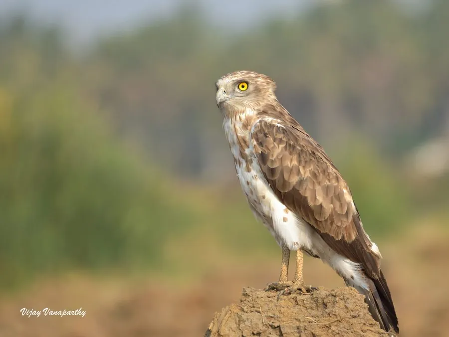

鸟类 · 动物界
短趾雕 Circaetus gallicus

以蛇类为主食的大型猛禽，头圆似鸮，趾短而有力。常在空中悬停观察地面，捕到蛇后整条吞下，是控制蛇类数量的专业猎手。
- 分类
- 门脊索动物门纲鸟纲目鹰形目科鹰科属短趾雕属
- 栖息环境
- 干燥开阔林地、灌丛、草原、半荒漠与低山丘陵，偏好有丰富蛇类且视野良好的生境。
- 地理分布
- 繁殖于南欧、北非、中亚、南亚至中国西北；部分种群冬季迁往非洲与印度越冬。
- 保护级别
- IUCN 红色名录列为无危（LC）；中国国家二级保护野生动物，列入 CITES 附录二。
物种志
短趾雕体长约六十二至七十厘米，翼展一百六十至一百八十五厘米，体重一千二百至二千三百克。头部圆大，面盘不明显，似猫头鹰；上体灰褐，下体乳白并密布褐色横斑，翼下飞羽深色，形成明显的深浅对比。尾羽较长，具数条横带。虹膜鲜黄色，嘴黑色，趾短粗，爪尖锐，适合抓握扭动的蛇体。
它栖息于干燥的开阔林地、灌丛、草原与半荒漠，常单独在空中翱翔或悬停，一旦发现蛇类便垂直俯冲，用短趾牢牢钳住蛇头后整条吞食，也捕食蜥蜴、蛙与小型哺乳动物。繁殖期在大树或崖壁上营巢，每窝通常仅产一枚卵，孵化期长达四十余天。欧亚种群繁殖于南欧、中亚至印度西北部，中国新疆等地有分布记录，部分种群冬季南迁。
形态与习性
- 体长62–70 厘米
- 翼展160–185 厘米
- 体重1200–2300 克
- 食性蛇类为主，兼食蜥蜴、蛙与小型兽
- 繁殖树上或崖壁营巢，通常每窝 1 枚
- 保护级别国家二级；CITES 附录二
趣味知识
- 能吞下超过自身头部宽度的蛇，靠胃酸慢慢消化。
- 飞行时头颈前伸，姿态介于雕与鹞之间。
- 羽色有浅色型与深色型，浅色型翼下对比尤为鲜明。